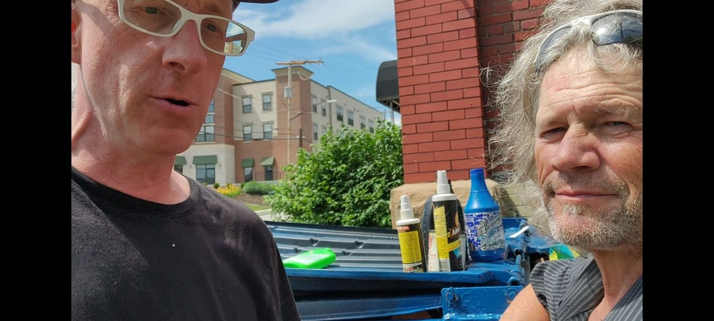

Timeline photos
I need you to understand my friends who live in the woods, under bridges, in abandoned properties. My friend Randy is a perfect example of this kind of person.
The only way you are getting them into a shelter is in handcuffs. They are too independent, too free. They are like the frontiers people who laid the groundwork for much of America.
The women are not going to battered women's shelters. And the men are not going to a place where they have to go to church 3 times a day and must shower in gang showers and be forced to go to bed at 8pm every night.
We call them chronically homeless. But that's a negative description.
They live off the land. They move around regularly. They rarely want anything to do with government programs (they do often use Medicaid because this lifestyle comes with significant injuries).
If you want to help them, the only way you are going to do it is if you come to them. They are not going to wait in your waiting rooms, fill out your paperwork and show up at 10am on Tuesday for a check-in. It's just not going to happen.
We must understand that all humans are not one-size-fits-all automatons. We are complicated, filled with free will and extreme forces of nature. I hope you can see those characteristics in yourself and then can try to understand that all of us have these innate human characteristics.
If anything, chronically homeless people are American to their core. They left behind a system that told them how they had to pray and act. They are making their way in the world on their own terms. They won't hurt you. But they wish we would stop hurting them.